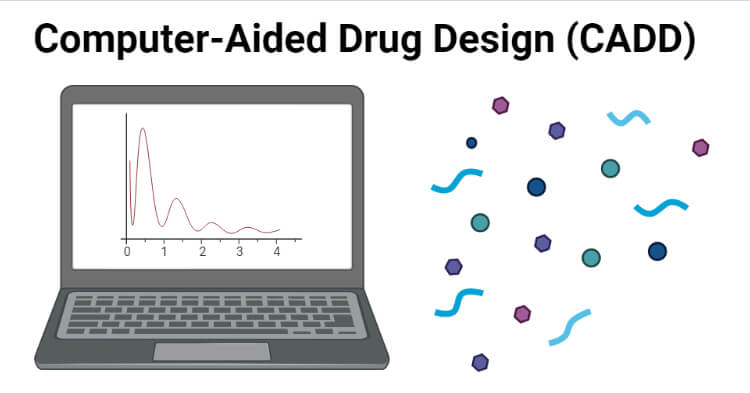

What is CADD?
Computer-Aided Drug Design (CADD) is a specialized discipline that uses computational methods to discover, develop, and analyze pharmaceutical agents. By leveraging molecular modeling, statistical analysis, and machine learning, CADD accelerates the drug discovery process and reduces the cost and time traditionally associated with bringing new therapeutics to market.
Types of CADD Approaches
CADD methodologies are broadly categorized into two main types:
1. Structure-Based Drug Design (SBDD)
SBDD relies on the three-dimensional structure of biological targets, typically obtained from X-ray crystallography, NMR spectroscopy, or cryo-EM. Key techniques include:
- Molecular Docking: Predicting the preferred orientation of a ligand when bound to a receptor
- Molecular Dynamics (MD) Simulation: Studying the physical movements of atoms and molecules over time
- Virtual Screening: Screening large compound libraries against target structures
- Binding Free Energy Calculations: Quantifying the strength of protein-ligand interactions
2. Ligand-Based Drug Design (LBDD)
LBDD is employed when the 3D structure of the target is unknown. It uses information from known active compounds:
- Quantitative Structure-Activity Relationship (QSAR): Correlating chemical structure with biological activity
- Pharmacophore Modeling: Identifying essential features for biological activity
- Similarity Searching: Finding compounds structurally similar to known actives
- Machine Learning Models: Training algorithms to predict activity from molecular descriptors
Key Software and Tools
The CADD toolbox includes numerous powerful software packages:
- AutoDock / AutoDock Vina: Popular open-source docking programs
- Schrodinger Suite: Comprehensive commercial drug discovery platform
- GROMACS / AMBER: Molecular dynamics simulation packages
- Discovery Studio: Visualizer and modeling environment
- RDKit / Open Babel: Cheminformatics toolkits
Applications in Modern Drug Discovery
CADD has transformed pharmaceutical research across multiple therapeutic areas:
- Target Identification: Using bioinformatics to identify disease-relevant proteins
- Lead Optimization: Refining initial hits into drug-like candidates
- ADMET Prediction: Predicting absorption, distribution, metabolism, excretion, and toxicity
- Drug Repurposing: Finding new uses for existing drugs
- Personalized Medicine: Designing drugs tailored to genetic profiles
Challenges and Future Directions
Despite its successes, CADD faces challenges including the accurate prediction of protein flexibility, treatment of solvent effects, and integration of multi-scale biological data. Emerging trends such as artificial intelligence, deep learning, and quantum computing promise to further revolutionize the field.
Conclusion
CADD represents a cornerstone of modern pharmaceutical research. As computational power increases and algorithms improve, CADD will continue to play an increasingly vital role in delivering safe and effective therapeutics to patients worldwide.